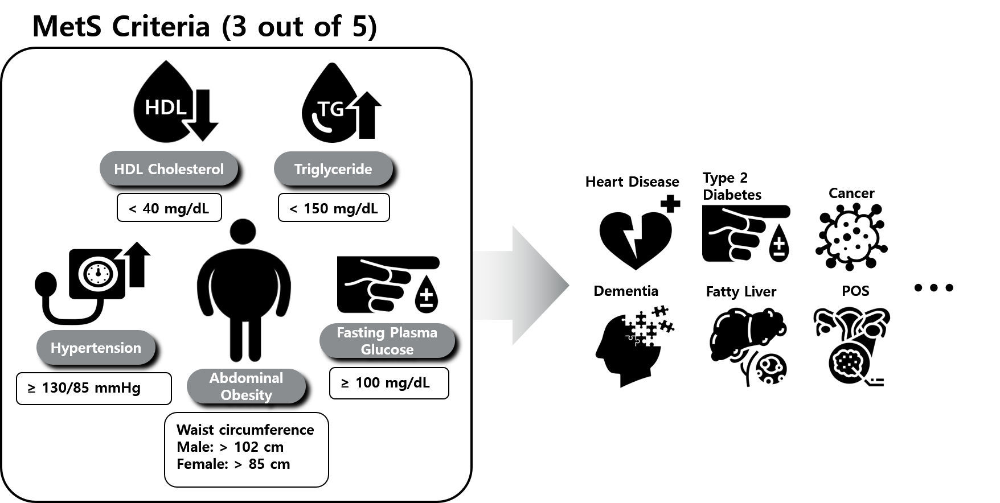
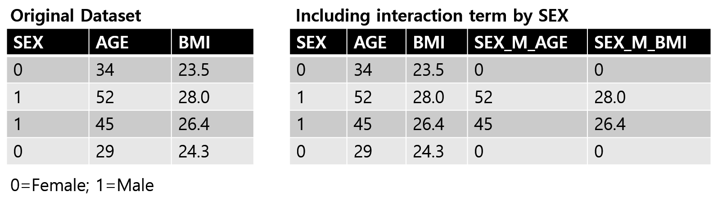
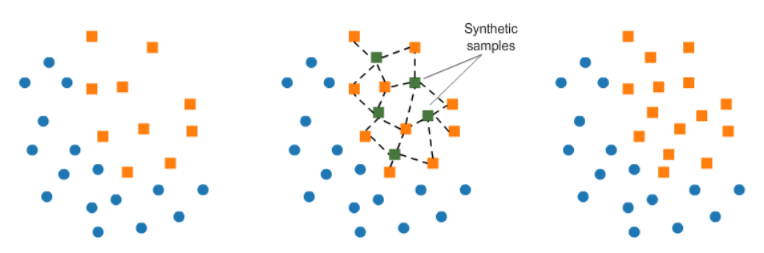

한의건강검진 자료 기반 대사증후군 위험 집단 비침습적 예측모형 개발
The Development of a Predictive Model for Metabolic Syndrome Risk Groups Based on Data from Korean Medical Examination
![]()
Digital Health Research Division
Korea Institute of Oriental Medicine
Introduction
KM Health Examination DB
Motivation
한의학계 체계적인 대규모 정량적 multimodal 데이터의 부재
표준화된 데이터의 부재
각 분야벌 파편화된 자료의 통합 관리 체계 부재
축적된 데이터의 낮은 활용도
KIOM AI 한의사 과제 개요
KM Health Examination (KMHE) DB
총 5개 한방병원(동신대, 부산대, 가천대, 동국대, 대전대)에서 수집
Collected Items
| 문진 및 설문 |
|---|
| 인구학적 정보/흡연력/질병력/약물력 |
| 식습관/흡연/음주/신체활동/여성력 |
| 피츠버그 수면의 질 척도 |
| 스트레스/핵심감정 척도 |
| 사상체질진단설문 |
| 구건/고갈/음수량/소화/대변/수면/발한/한열 |
| 기기검사(생체신호) |
|---|
| 인체계측/활력징후(혈압, 체온, 맥박) |
| 요화학분석 |
| 활성산소/소변색/구취/타액/유수분(피부) |
| 생체임피던스/대사량/환기량/복부압통 |
| 맥진/설영상/K-Prism |
| Posture/3D 체형 |
| 적외선 전신 체온 |
특징
한의학의 사진(四診) 및 소증(素證) 체계에 대한 정량적 데이터 수집
비침습적 건강 검진
참조데이터 구축이 목적이기 때문에 건강군 위주로 대상자 모집
연구목적을 위한 일반건강검진 자료와 연계
Metabolic Syndrome
대사증후군(Metabolic Syndtrome, MetS)
혈압 상승, 혈당장애, 고중성지방혈증, 저 고밀도지단백 콜레스테롤, 복부비만에 대한 5가지 진단 기준 중 3 가지 이상의 증상이 군집적으로 나타난 상태
Metabolic Syndrome
대사증후군 위험군(MetS Risk Group)
대사증후군 전단계로 위에서 열거한 MetS 진단기준 5가지 중 2가지 증상이 동시에 발현한 집단
정의 목적
MetS 조기진단 및 예방을 위한 적극적 중재
MetS로 인한 사망 위험 증가 \(\rightarrow\) 체계적 관리
식습관 및 생활 습관 개선을 통한 MetS 이환 예방
성별에 따른 최근 15년간 연령 별 대사증후군 유병률(Metabolic Syndrome Fact Sheet in Korea 2024 발췌)
Puropse of the Study
Objective
비침습적 건강검진 정보 기반 MetS 위험군 예측모형 개발
생체신호 정보 기반 MetS 위험군 예측모형 가능성 확인
특징 그룹(데이터셋)의 조합에 따른 최적 예측모형 도출
Methods
Data Extraction
MetS 위험군 조작적 정의
- HDL cholesterol, Triglyceride 정보 부재 \(\rightarrow\) 약물력 및 질병력 정보 활용
조작적 기준
한의 건강검진 질병력에 고혈압을 보고 했거나, 혈압약을 복용하거나 한의건강검진에서 측정한 SBP/DBP와 일반건강검진에서 측정한 SBP/DBP의 각 평균이 SBP/DBP ≥ 130/85 mmHg
한의 건강검진 질병력에 당뇨 관련 질환을 보고 했거나, 당뇨 관련 약물을 복용하거나 일반건강검진 공복혈당 ≥ 100 mg/dL
일반건강검진에 보고된 허리둘레가 남성의 경우 90cm 보다 크거나 여성인 경우 85cm 보다 큰 경우
한의 건강검진 질병력에 고지혈증을 보고 했거나, 고지혈증 관련 약물을 복용
- MetS 위험군: 위 4 가지 기준 중 2개 이상을 만족한 케이스
Data Extraction
후보 검진항목
- 기초 인구학적 정보 및 생체신호(기기) 데이터 기반 후보 특징
Data Extraction
- 총 1,518 케이스 추출
- 8개 후보 feature set 생성
| Feature Set |
|---|
| Demographics (DEMO) (7) |
| Radial Pulse (12) |
| HRV via PPG (8) |
| Bioimpedance (91) |
| 3D posture/anthropometrics |
| Merged Set |
|---|
| Features filtered by p < 10-6 (70) |
| Demo + FILTERED (77) |
| Merging All Features (142) |
Modeling Strategy
Train/Test 집합 분할
Training (80%): 1214 (Control: 1051; MetSR: 163)
Test (20%): 304 (Control: 263; MetSR: 41)
훈련 및 검증 집합에서 Control:MetS 비율을 동일하게 분할
후보 모형
Logistic regression (elastic net, ELNET)
Radial based kernel support vector machine (SVM-RBF)
Random Forest (RF)
Extreme gradient boosting (XGB)
Multilayer perceptron neural network (MLP)
평가 방법
10-fold cross validation 실시 (2회 반복)
평가척도 : ROC 곡선 하 면적(area under the curve of Receiver operating charateristic, AUROC)
10-fold CV를 통해 최대 AUROC 값을 갖는 hyperparameter 선택
선택한 모형을 검증집합에 적용해 최종적인 모형 성능 평가 실시
Data Preprocessing
- 훈련 및 검증 집합에 독립적으로 적용
- Z-transformation
\[ z_{ij} = \frac{x_{ij} - \bar{x}_{j}}{s_{x_{j}}}~~~ i=\{1,\ldots,n\},~~~~ j=1,\ldots,p \]
- Min-Max Normalization
\[ z'_{ij} = \frac{x_{ij} - x_{min, j}}{x_{max, j} - x_{min, j}}~~~ i=\{1,\ldots,n\},~~~~ j=1,\ldots,p \] \(n\): number of observation, \(p\): number of features
- 모든 명목형 변수(예: 성별)는 0과 1로 재코딩
- 성별에 대한 교호작용 항을 모든 데이터셋에서 추가로 생성
Example

- MetS 위험군의 케이스가 Control에 비해 작아 대표적인 oversampling 기법 중 하나인 SMOTE (synthetic minority over-sampling technique) 적용

Results
Model Performance
각 전처리 방법 및 후보 모형 별 검증 집합에 대한 AUROC
Conclusion and Discussion
Findings
AUROC 기준 0.659 ~ 0.907의 성능을 보임
DEMO + DEV_FILTER의 성능이 모든 모형에서 안정적으로 높게 나타남(AUROC 0.864 ~ 0.905)
DEV_FILTER + MLP에서 최대 성능을 나타냄
전통적인 임상정보가 없어도 생체신호 정보만으로도 MetS 위험군을 정확하게 예측 가능
Limitation and Further Study
혈액 정보의 부재로 MetS 위험군의 기준이 비만에 oriented 된 측면이 있음
LIME 또는 SHAP analysis와 같은 방법을 통한 모형 해석 필요
임상 활용을 위한 모형의 calibration 필요
전자공학회 2024년도 하계종합학술대회: 2024-06-26